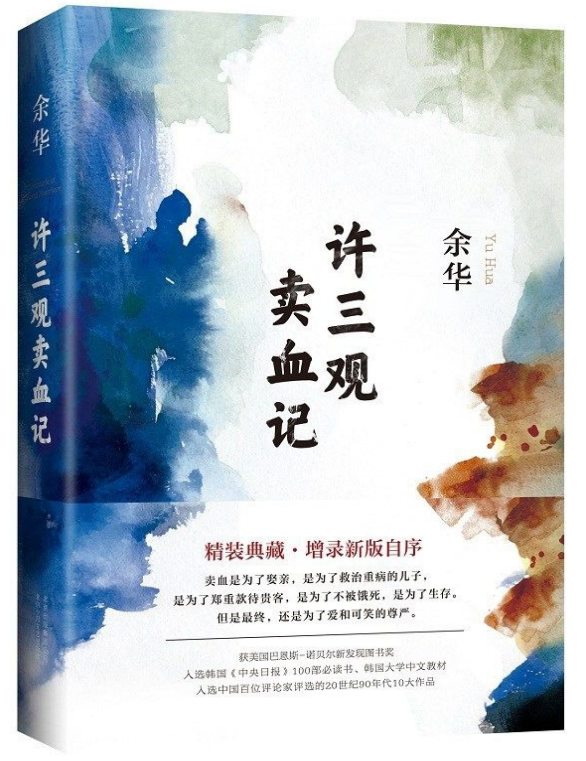
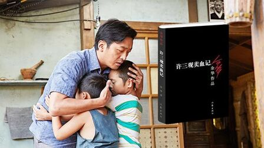
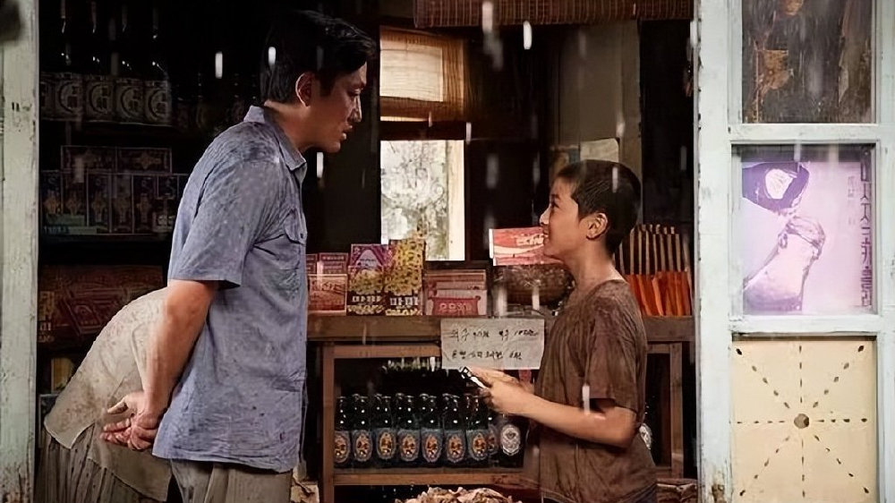

读书记录1：许三观卖血记

《许三观卖血记》是中国当代作家余华创作的长篇小说，首次发表于《收获》1995年第6期。
1 前言
最近刚读完了余华的《许三观卖血记》，在之前读过了余华的《活着》，当时读《活着》的时候就感触很深，福贵很惨，他的家人不断离他而去：父母、伴侣、孩子、孙子，最后只有一头老牛和他相依为命。所以在读《许三观卖血记》的时候，一看到这个名就知道肯定和《活着》的内容差不多，讲一个人命运很苦的，而且最后的下场很惨。但是《许三观卖血记》是余华笔下为数不多的幸福大结局的书籍，接下来就写下读完这本书的一些感悟。
2 经典句子
- 事情都是被逼出来的，人只有被逼上绝路了，才会有办法，没上绝路以前，不是没想到办法，就是想到了也不知道该不该去做。
- 就算是你不是我的儿子，就算再骂你，你饿了还是要给你买面吃。
- 我今天算是知道什么叫血汗钱了，我在工厂里挣的是汗钱，今天挣的是血钱。
- 这苦日子什么时候能完？小崽子苦得都忘记什么是甜，吃了甜的都想不起来这就是糖。
- 他的泪水在他的脸上纵横交错地流，就像雨水打在窗玻璃上，就像裂缝爬上快要破碎到碗，就像蓬勃生长出去的树枝，就像渠水流进了田地，就像街道布满了城镇，泪水在他脸上织成了一张网。
- 世上还有这种人，帮着别人来搬自己家里的东西，看上去还比别人更卖力。
- 这一天许三观走在街上时，脸上挂满了笑容，笑容使他脸上的皱纹像河水一样波动起来，阳光照在他脸上，把皱纹里面都照亮了。
- 许三观解开棉袄的纽扣，让冬天温暖的阳光照在胸前，于是他被岁月晒黑的胸口，又被寒风吹得通红。
- 来两盘猪肝，二两黄酒，黄酒温一温
- 风流一时，吃苦一世
3 卖血过程
第一次卖血，他懵懂不知世事，用卖血的钱取了喜欢的漂亮媳妇。自己吃了一盘炒猪肝。
第二次卖血，是辛苦养了九年的大儿子，却是替别人养，被戴绿帽，被别人嘲笑。结果大儿子又打伤了人，被抄了家。为了还债，他又卖了血。
第三次卖血，因为他被戴绿帽被所有人嘲笑，许三观内心挣扎痛苦，感到不公。看望以前的相好时，邪念一出，干了坏事。心里过意不去，又去卖血，买了很多东西去补偿。
第四次卖血，遇到灾年，一家人喝了57天玉米粥之后，三个儿子都忘记了甜味，他又去卖血，带家人去面馆大吃一顿，让一家人过得好点。
第五次卖血，他看到下乡插队的一乐瘦骨嶙峋，他卖血给一乐钱。
第六次卖血，为了二乐在乡下早日抽调回城里，他又卖血请二乐队长吃饭喝酒抽烟。
第七次到十一次卖血，非亲生的大儿子一乐得了肝炎，为了攒钱救一乐，他一路卖血6次到上海。
他最后一次卖血，是因为他想吃一盘炒猪肝，然而他已经老了，头发白了，牙齿掉了，血头嫌弃他，儿子们也嫌弃他。只有妻子许玉兰带他去吃了心心念念的炒猪肝。
许三观每一次卖血，好像都有不能拒绝的理由。他每一次卖血都是为了生活，不得已而为之。哪怕有一点办法，谁想去卖血呢？为了他人卖了11次血，想为自己卖一次的时候却已垂垂老矣，再也卖不了血了。
4 关于婚姻
婚姻：一半靠爱情，一半靠义气
许三观从小没爹没妈，一个人在城里当丝厂送茧工。于是他用第一次卖血赚的钱，娶了漂亮的油条西施许玉兰，给自己安了一个家。但是你说他喜欢徐玉兰吗？也不见得，可能就只是在第一次卖血之后，心血来潮想找女人。
婚后的许三观，家庭生活和睦，夫妻俩也恩爱有加，接连生了三个男娃。可没想到随着孩子们一天天长大，街坊邻居流言四起，说他最喜爱的大儿子一乐长得不像他，倒像妻子之前的相好何小勇。许三观忍不住找妻子对质，得知妻子婚前给他戴绿帽子后，便在一次探病时，出轨了自己曾经喜欢的女人林芬芳。
换作现在，夫妻双方彼此不忠，家里早就鸡飞狗跳、不得安宁了。**可许三观一家没有。**他在得知自己的大儿子不是亲生的后，没有弃之不顾，依旧给他吃好穿好，还供他上学。而许玉兰也明白丈夫的出格只是出于报复心理，惩罚过他后这事也就翻篇了。
两个人的日子，还是接着磕磕绊绊地往前走。
有一年，突如其来的恶劣天气导致庄稼被毁，闹起了饥荒。看到街上的灾民越来越多，一向没有忧患意识的许三观，开始慌了。这时，许玉兰才告诉他，这些年她每天都会在做饭时省下一把米，买菜时省下一分钱。
幸而靠着妻子的未雨绸缪，家里才勉强熬过了这段艰难的时光。
到了“文革”期间，许玉兰被人拉出去批斗，不仅剃了阴阳头，还要每天到街上最热闹的地方去挂牌站着，身心都遭受了莫大的伤害。**许三观没有因此抛下妻子，相反他冒着出门被人扔小石子、吐唾沫的风险，每天风雨无阻地给妻子送米饭，甚至还偷偷藏了红烧肉。**等到许玉兰傍晚回来，就给她吃捂到被窝的饭菜，准备好热水泡脚，还在孩子们面前维护她，这才稳住了一家人的心。
就这样，许三观夫妻俩相互扶持，渡过了一道又一道难关，最终迎来了彼此搀扶、相守相依的圆满结局。
杨澜曾说：“婚姻需要爱情之外的另一种纽带，最坚韧的一种不是孩子，也不是利益和金钱，而是肝胆相照的义气。”其实，最好的婚姻，既不是初见时的怦然心动，也不是相处时的从未红脸。而是犯错时彼此谅解的包容，低谷时相互扶持的义气。
每对夫妻唯有通过生活的层层考验，才能彻底悟透婚姻的真谛。
5 关于家庭
家庭：一半靠血缘，一半靠珍惜
许三观是在大儿子一乐九岁那年，才知道自己给别人养了儿子。**从此以后，他的心里便埋下了一根刺。**虽然继续养着一乐，却再也无法把他像自己的亲儿子般看待。
闹灾荒的那年，就在全家人快要熬不下去的时候，许三观去卖了次血。他带着家人上饭店改善伙食，可唯独抛下了一乐。**第二天一早，伤心的一乐便离家出走去找亲爹。**许三观待在家里一副满不在乎的样子，妻子却着急地找了一天。
直到傍晚，他才忍不住出门，却发现一乐就蹲在家门外，哭着跟他诉说这一天的遭遇。原来，一乐发现，许三观比亲爹对他好太多，于是便丢掉之前的想法，主动回来了。
许三观的心就在那一刻释然了。他明白了不是只有血缘关系的人才算得上是亲人，那些随着时间积累起来的感情才是无可替代的纽带。
于是，他背着一乐去孩子心心念念的饭馆吃面条，从此拔掉了心上的刺，而一乐也在心里认定了许三观这个父亲。
他们对彼此的爱，开始变成了双向奔赴。
后来，成年工作后的一乐，在下乡的艰苦日子里患上了肝炎，必须立马到上海的大医院救治才能活命。许三观把家里所有的积蓄都拿出来，又挨家挨户地借钱，治疗费还是远远不够。万不得已，他又走上了卖血赚钱的道路。
医院规定每隔三个月才能卖一次血，可为了凑够一乐的费用，许三观偏向虎山行。他一路北上，落脚于一座又一座城市来卖血赚钱，毫不犹豫地以命换命。
周国平曾说：“爱，就是在这一世寻找那个仿佛在前世失散的亲人，就是在人世间寻找那个最亲的亲人。”
- 真正的亲人，是以爱为圆心，用信任作半径，画出给彼此遮风挡雨的一隅之地。
- 真正的家人，不是靠血缘关系来维系的，而是以爱和珍视为纽带，联结着彼此。

6 关于人生
人生：一半靠命运，一半靠经营
正如作家东野圭吾所说：“最终的所谓命运，还是自己一步步走出来的。”
回顾许三观这一生，虽命运几经波折，却靠着认真经营，收获了一个圆满的结局。“搭伙过日子”的婚姻，是那个年代的标配。可对爱人珍惜、对家庭负责的许三观，却把一段“凑合”的婚姻，经营成了能够彼此依靠的坚强后盾。
不管和妻子遇到怎样的困难与挫折，他都只有解决的念头，没有抛弃的想法。坚守“有福同享，有难同当”的婚姻经营之道，最后得一心相依，傍一人终老。而在一乐性命攸关的那一年，许三观挨家挨户地跟人借钱，凭着自己的人际经营，为儿子迎来一线生机。

以前，年幼的一乐打伤了人，面对高额的医药赔偿费，许三观守信偿还，于是这次人家二话不说就借钱给他。曾经，他放下对何小勇的怨恨，在对方生死攸关之际不计前嫌，劝一乐去救人，于是其遗孀和女儿们都拿出了不少积蓄来帮他。
许是老天垂怜，后来许三观在北上卖血的路上，又碰到了许多好心人。
- 有人看他喝着冰冷的江水，便送来了盐和热茶；
- 有人发现他晕倒在地，便给他盖了被子，买了面条；
- 有人知道他北上的目的后，便让他免费渡船，省下费用。
正如《你好生活》里写的：“山有顶峰，湖有彼岸，在人生漫漫长途中，万物皆有回转，当我们觉得余味苦涩，请你相信，一切终有回甘。”
人生就是如此，你不知道在哪个转角会碰上厄运，也料不到在何时又能绝处逢生。好在，我们收下了上天赏赐的一半幸运，加之自己的一半经营，最终走出了人生的至暗时刻。
7 画龙点睛
普通工人阶级出身的许三观因一次好奇，发现了“卖血赚钱”这一行当。于是将“卖血”当成了一种惯性，每一次遇到困难时，许三观都靠“卖血”来解决。
**十二次的“卖血”经历，卖的不光是“血”，而是对“生命”的出卖。**许三观以为只要还能“卖血”，就证明自己对家人、对社会还是有价值的。他甚至以为“卖血赚钱”就是他存在的价值。
然而，“卖血”终究是为现实服务的，当他因为身体和年纪的原因，被年轻的血头拒绝时，许三观崩溃了。当习以为常的事情不再习以为常，一时转变不过来的许三观陷入了迷茫。
许三观的迷茫来自于他已经习惯了通过“卖血”，来解决生活中的难题，所以不知道除了“卖血”，他还能做些什么来体现自己的价值。好在，许三观是个乐观的人。
短暂的迷茫过后，他终于和自己和解，并回到了常规的现实之中。
经历过重重磨难后，已是花甲之年的许三观，终于卸下生活的重担，安享晚年。他的三个孩子各自成家立业，生活蒸蒸日上，而自己也与发妻历经风雨，依旧守候在彼此的身旁。
这让我不禁想起杨绛先生的话：“生活一半柴米油盐，一半星辰大海。放一点盐，它就是咸的，放一点糖，它就是甜的，放一点诗意，它就是别人眼里的远方。想调成什么味，全凭自己。”
**如果你正经受着生活分你的那半边苦，也照样可以创造出属于自己的那半份甜。**因为你的世界究竟是何种味道，不是由命运决定的，而是你自己说了算。
最后，愿我们认真经营，好好生活，尽情享受自己的半糖人生。
8 个人感受
生活中遇到困难是正常的，并且我认为生活中的苦难是多于幸福的，因为苦难可能不需要我们做什么就会到来，但是幸福需要我们自己去珍惜，去努力获取。在遇到苦难的时候，每个人的做法不同，有的人直面困难不逃避，想办法去解决问题，就像许三观在遇到了苦难之后，一次一次通过自己的努力——卖血来渡过危机。
也有的人选择躺平，任凭苦难的到来他也无动于衷。最终，被生活摧残的面目全非。此外，许三观也是一个善良的人，他在面对妻子、孩子、邻里以及根龙和阿方，他都是坦诚相待。这也让他在后面一乐生病需要钱的时候，人们都愿意借钱给他。
感觉自己的写作能力好差，但是余华就能把这些细腻的感情、虔诚的心灵描写的恰到好处，还是要多读些经典作品，感受人间冷暖。
 微信
微信 支付宝
支付宝